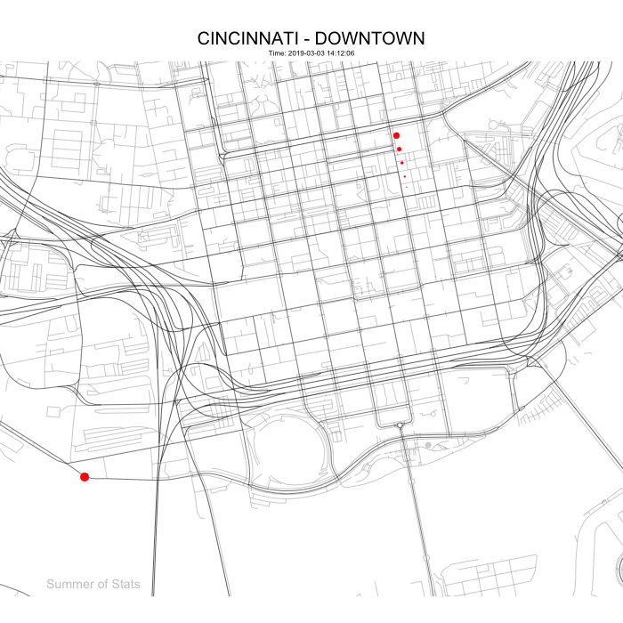
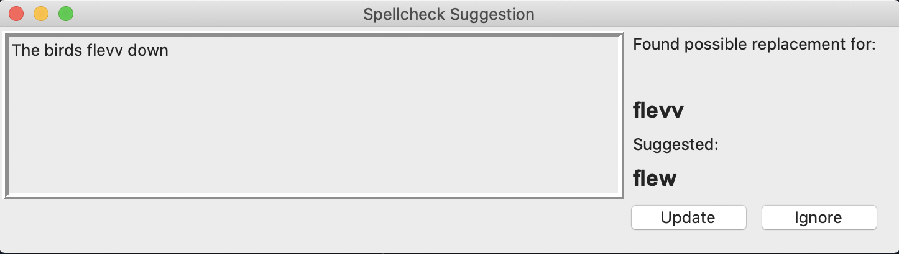

Telling compelling stories with data is what I love to do.
Below, I had some fun creating visuals using publicly available data from the City of Cincinnati Open Data Portal. I hope you enjoy!
Animated Maps
Using vehicle GPS data from city-owned vehicles (SOURCE DATA), this map tracks these assets as they move around downtown Cincinnati, using R and gganimate.
Single Vehicle

Multiple Vehicles

Adding a trace line for each vehicle reveals some really interesting patterns - we can clearly see how police patrols criss-cross different sections of downtown!
These visuals are rendered as gifs, making them easy to embed into a web page or slide presentation.
Infographics
The city’s database of vendor payments (SOURCE DATA) also provides a wealth of information about funding for local projects:
Non-Profits
The following details changes in city funding to local non-profits, by highlighting the 5 non-profit organizations with the largest swings (up or down) in city funding compared to the previous year.

Tableau Viz
The following is a Tableau dashboard:
Other Projects
I am also the author of Python package OCRfixr, a machine-learning powered spellchecker for OCR text.
OCRfixr makes use of a BERT language model to double-check spellcheck suggestions. This context-aware approach reduces the number of “bad” suggestions the user encounters.
